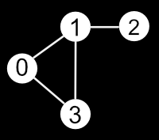

Graph representation
Types of graph:
- Undirected graph
- Directed graph
- Weighted graph
Adjacency matrix
Adjacency matrix stores the edges in a matrix. Adjacency matrix for this graph would be

| 0 | 1 | 2 | 3 | |
|---|---|---|---|---|
| 0 | 0 | 1 | 0 | 1 |
| 1 | 1 | 0 | 1 | 1 |
| 2 | 0 | 1 | 0 | 0 |
| 3 | 1 | 1 | 0 | 0 |
This is undirected unweighted graph so we represent every edge by simple 1. Absence of the edge is 0.
Adjacency list
Stores the edges as linked list.
0 | 1 -> 3
1 | 0 -> 2
2 | 1
3 | 0 -> 1